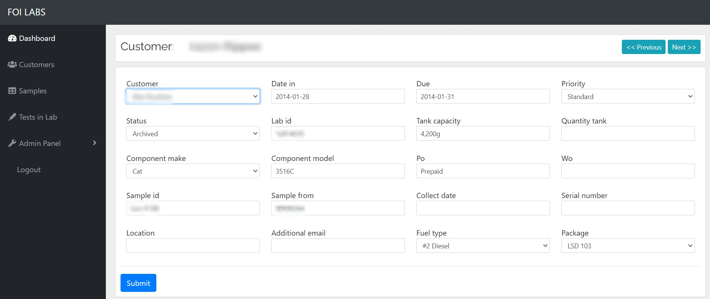

Laboratory Management System
This was a project I started back in november 2017 when I first learned python. I was the sole creator/developer
for
the first year of the project before I was able to hire help.
The system stored fuel sample data for the entire lab and provided an interface for lab chemists and admins to
view,
add and send data to clients.
Lab results would be generated by the system in PDF form and automatically sent to the client along with an
interface
for customers to be able to login and view.
Customers had the ability to view all their data with a dynamic search form, trend data, add notes to reports and
even
map their samples' physical location.
I worked on this system for 2 years before selling this to FOI Laboratories.
Technologies:
- - Python
- - Django + Django REST Framework
- - React JS
- - Postgres
- - AWS (S3 & RDS)
- - Zingcharts - Trending & graphing test results
- - Google Maps API
- - XML2PDF - PDF generator
Laboratory Admin Dashboard

Sample ID Form

Results Input Fields

PDF Report (Automaticly Generated)

Customer Dashboard